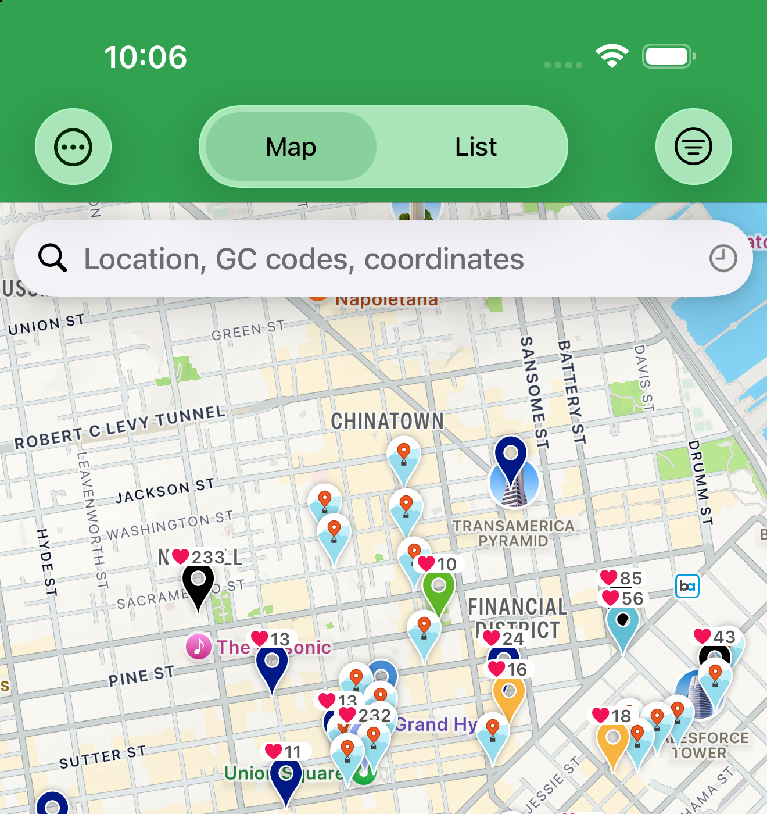
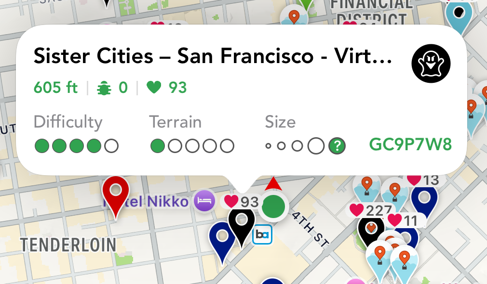
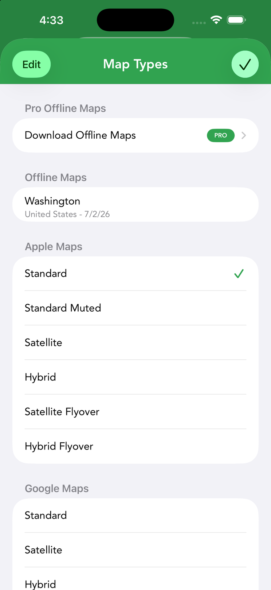
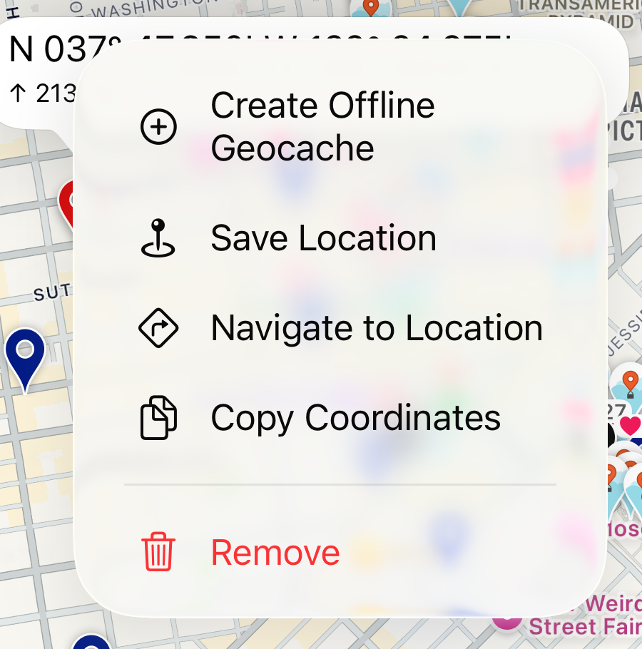
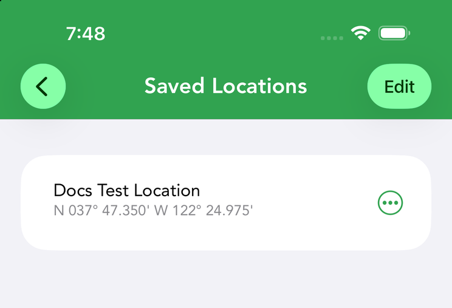

The Map
The Live tab is where most caching happens. It shows caches around you on a map (or as a list), lets you switch between map sources and view types, and gets you to a cache with the compass or turn-by-turn navigation.
Map and List

The Live tab toggles between a map and a list of the same caches. On the map, tapping a cache pin shows its callout, which carries all the same information a list row shows; tap the callout to open the cache’s details. In the list, tapping a row opens details directly. Pins are colored and iconed by cache type and status (found, owned, etc.), and you can layer highlights on top to mark caches visually.
List rows pack in the essentials — name, distance, difficulty, terrain, size, favorite count and GC code. The sort button (up/down arrows) opens a sheet with a Direction (ascending/descending) and a long list of sort types: Date Found, Date Last Found, Date Placed, Difficulty, Distance, FTF, Favorite Count, Favorite Percentage, Found, GC Code, Highlight Color and more. The same sort sheet is used in offline lists.
The Cache Callout

Tapping a pin pops up a callout that summarizes the cache without leaving the map: its name and type icon, distance from you, trackable and favorite counts, difficulty and terrain dots, container size and the GC code. Tap the callout itself to open the full detail screen.
Map Types

The map options icon in the map’s tool stack opens the Map Types panel; long-press it to jump between the types you used most recently — 3 by default, and you can raise it to a maximum of 6 with Number of Maps in Settings › Map Options & Navigation. The panel is organized into sections:
- Pro Offline Maps PRO — a Download Offline Maps entry for OpenStreetMap-based vector maps. See Offline Maps.
- Apple Maps — Standard, Standard Muted, Satellite, Hybrid, Satellite Flyover and Hybrid Flyover.
- Google Maps — Standard, Satellite, Hybrid and Terrain.
- Open Maps — Open Street and Open Cycle.
- Arc GIS — Satellite, Topo, Clarity and Nat Geo World Map.
- USGS — USGS Topo.
- Ordnance Survey (UK) — Street View (see below).
- Custom Tile URLs — point Cachly at your own tile server (see Custom Tile URLs).
From the same panel you can download Pro Offline Maps, adjust offline settings (contours, points of interest, parking) or add custom tile URLs. When an offline map is active, the map-options icon shows a diagonal line across it. Defaults and per-service API keys are set in Settings › Map Options & Navigation.
On-Map Controls
A tool stack sits along the right edge of the live map. From top to bottom: the compass / re-center control (appears when the map is rotated — tap to snap back to north), Reload Geocaches (refresh the current area), Proximity Alert, the map options (layers) icon — tap to choose a map type, long-press to jump between your recent types — and Current Location (recenter / cycle follow modes). A filter icon toggles the live-search filters; it fills solid white when a filter is active (outline when off), and “Filtering On” appears at the top of the map as a reminder.
Auto Load Map PRO — long-press the Reload icon (or enable it in Settings › Cachly Pro) and caches load automatically as you pan, no tapping Reload. It needs a sufficient zoom level (the button dims when you’re zoomed too far out).
Bulk Actions from the Map
The … menu at the top-left of the live map acts on the caches currently loaded, not just one pin. It offers Add to List, Highlight and Export GPX, and each action asks for a scope:
- All Caches — everything loaded on the map.
- Visible Caches — only what’s inside the current viewport.
- Highlighted Caches — only caches with a highlight applied.
It’s the fastest way to sweep an area’s results into an offline list or a GPX file.
UK Ordnance Survey Maps
Online UK OS maps need a free Bing Maps API key (from bingmapsportal.com with Key Type Basic and Application Type Public Website, or reuse a GME key). Add it in the map-type chooser via Add Custom Tile URL → UK OS Maps preset, paste the key, Save.
Similarly, OpenCycleMaps needs a free Thunderforest API key — sign up at thunderforest.com, then paste the key under Settings › Map Options & Navigation › Map API Keys.
Your Location & Following
Your position shows as a pulsing icon with a red heading indicator; tap it for current coordinates, GPS accuracy and elevation, plus an action menu to Save Location, Create Offline Geocache or Copy Coordinates. The follow button (in the right-side tool stack) cycles through follow modes:
- No Follow — the map stays where you put it.
- Follow — the map tracks your location; panning disengages it.
- Follow With Heading — follows and rotates the map to match the direction you’re facing.
- Lock Follow — long-press to lock follow on and prevent accidental map moves.
View Types
Beyond the default live view, the map can show many different sets of caches. Switch the view type from the map’s controls:
| View | Shows |
|---|---|
| Live | Caches near the current map region, fetched on the fly. |
| User’s Found / Hidden | Caches you’ve found, or that you own and hid. |
| Bookmarks | A bookmark list from your account. |
| Offline Lists | Caches saved in an offline set. |
| Favorites | Caches with favorite points. |
| Search Results | The output of an advanced search. |
| Navigation | A route to your selected cache. |
| Trackable Travels | The path a trackable has traveled. |
| Counties | County boundaries for county challenges PRO. |
| DeLorme Grid | DeLorme atlas grid pages for DeLorme challenges PRO. |
Navigating to a Cache
From a cache’s details, choose to navigate. The Navigate to Cache screen draws a direct line to the target and shows distance, bearing and accuracy alongside a compass arrow — ideal for the final approach where street maps run out. Related waypoints appear with a distinct symbol per type; a generic waypoint is a plain red pin, and multiples of one type are numbered (P01, P02 and so on). Other caches within 5 miles are shown. You can switch the target, zoom to fit both you and the cache, peek at Google Street View for terrain (this requires the Google Maps app installed), or set a proximity alert that fires even with the screen locked. To drive there, hand off to an external app — Apple Maps, Google Maps, Waze, HERE Maps, TomTom / TomTom Go, Navigon, Sygic, Gaia GPS, Maps.me, Magic Earth, Pocket Earth, Topo Maps, Scout or Guru — each shown only if it’s installed; the preferred app is set in Settings.
Searching the Map
The search field accepts a place name, one or more GC codes (comma-separated), a coord.info URL, raw coordinates, or an OpenStreetMap POI query (q: — see OSM POI search); recent searches are kept for reuse. The refresh button (circular arrows, in the tool stack) loads caches for the current region; three dots on it mean more results are available — tap again to load them.
Dropping a Pin

Long-press any empty spot on the map to drop a movable pin. Its callout shows the point’s coordinates and elevation, and the … button opens a menu of actions for that spot:
- Create Offline Geocache — make your own offline cache at the pin, stored in an offline list.
- Save Location — store the point in your Saved Locations.
- Navigate to Location — open navigation straight to the pin.
- Copy Coordinates — copy the point to the clipboard.
- Remove — clear the pin from the map.
While the Navigate screen is showing, the same menu adds Set as Target so you can retarget the compass at the dropped point. Dropping a pin is also the starting point for a coordinate projection.
Saved Locations

Choosing Save Location from a dropped pin opens the Save Location screen: give the spot a name and fine-tune its position with the coordinate picker (the same picker used for waypoints, with selectable coordinate formats). Saved spots collect under More › Saved Locations, where each row shows the name and coordinates with a count badge on the list. Each row’s … menu offers Share and Copy Coordinates — handy for trailheads, parking spots or anywhere you’ll want to find again.